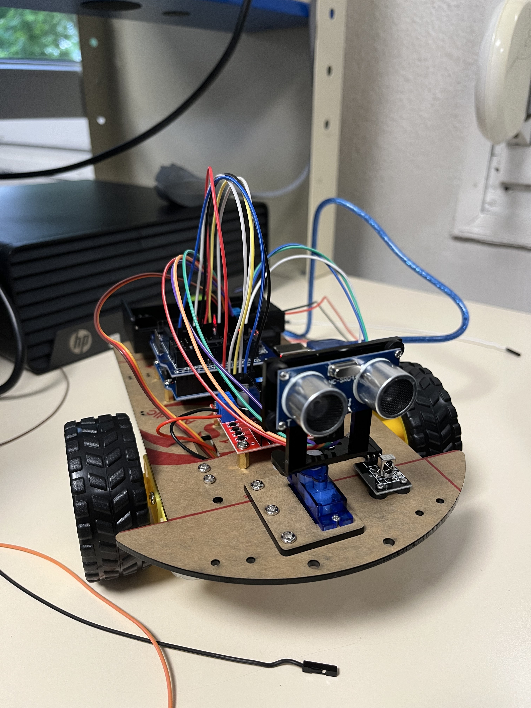

Ce projet a été réalisé en première année de BUT GEII, en groupe de trois étudiants. L’objectif principal était de concevoir un robot capable de se déplacer de deux manières : en mode automatique, où il évolue de manière autonome, et en mode manuel, contrôlé via une télécommande. Comparé aux projets précédents, nous avons bénéficié d’une plus grande autonomie. On nous a fourni une base et un objectif précis, mais sans directives détaillées, ce qui nous a permis d’organiser notre travail et de choisir notre propre approche.
Démarche et Approche du Projet
Ce projet a été bien différent des précédents : contrairement aux projets encadrés par des questions guidées, ici, on a été immédiatement plongés dans une approche beaucoup plus autonome. Nous avions un objectif clair, des documents de référence et quelques ressources, mais aucune question intermédiaire pour nous orienter. Cela nous a forcés à organiser notre travail de manière plus indépendante, à choisir nous-mêmes l’ordre des étapes, et à apprendre en grande partie par l’expérimentation.
Dès le début, j’ai pris le rôle de secrétaire du groupe, en m’occupant des documents techniques. J’ai notamment réalisé le diagramme de Gantt pour visualiser la planification du projet, le cahier des charges fonctionnel, ainsi que d’autres documents comme des analyses fonctionnelles, souvent un peu fastidieuses, mais essentielles pour cadrer le projet et définir clairement les besoins. Une fois cette partie terminée, j’ai progressivement rejoint mes coéquipiers sur les tests et la programmation du robot.
Développement et Difficultés Techniques
Le robot devait pouvoir fonctionner en deux modes : un mode manuel, où il est contrôlé via une télécommande infrarouge, et un mode autonome, dans lequel il détecte les obstacles grâce à un capteur à ultrasons monté sur un servomoteur, analyse son environnement, puis adapte sa trajectoire.
Nous avons d’abord testé séparément les différents modules fournis en ressources : réception des signaux infrarouges, contrôle directionnel par télécommande, déplacement automatique, gestion du servomoteur et détection d’obstacles. L’étape suivante a été de fusionner ces codes en un seul programme combinant les deux modes. C’est à ce moment-là que les principales difficultés sont apparues. D’une part, sur le plan logiciel, la gestion des différents états du robot s'est révélée complexe. D’autre part, nous avons rencontré un problème matériel majeur : une tension très insuffisante sur les moteurs, malgré une double alimentation. Les moteurs ne recevaient que 0,1 à 0,2V, ce qui les empêchait complètement de tourner. Le problème semblait parfois se résoudre sans explication claire, ce qui a grandement compliqué nos tests.
Bilan et Compétences Acquises
Malgré tout, nous avons pu expérimenter plusieurs programmes complets. L’intégration stable des deux modes dans un même programme reste un défi en cours. Ce projet m’a permis d’acquérir de nombreuses compétences, à la fois en gestion de projet, en rédaction technique, en programmation embarquée sur Arduino, et surtout en résolution de problèmes matériels, dans un contexte où l’explication n’est pas toujours évidente. Il m’a aussi appris à travailler de manière plus autonome, avec une vraie liberté dans l’organisation des tâches et la recherche de solutions.
Compétences Développées sur ce Projet
| Compétence | Détail de la compétence | Niveau d’acquisition |
|---|---|---|
| Gestion de projet | Réalisation d'un diagramme de Gantt pour planifier et suivre l’avancement. Organisation des tâches de l'équipe. | |
| Rédaction de documents techniques | Rédaction de documents formels (cahier des charges fonctionnel, analyses) essentiels à la structuration du projet. | |
| Programmation sur Arduino | Correction, amélioration et fusion de codes en langage Arduino pour gérer les différents modules du robot. | |
| Résolution de problèmes techniques | Tests et diagnostics pour corriger des erreurs de calibration et des pannes matérielles complexes (alimentation des moteurs). | |
| Interprétation de documentation | Consultation de datasheets pour assembler et câbler correctement les composants (moteurs, capteurs, carte de puissance). | |
| Autonomie et prise d’initiative | Organisation du travail, priorisation des étapes et recherche de solutions sans consignes détaillées. |
Détails du Projet (Vidéo & Image)
Découvrez ci-dessous une démonstration du robot en action, ainsi qu'une photo de son montage final.
